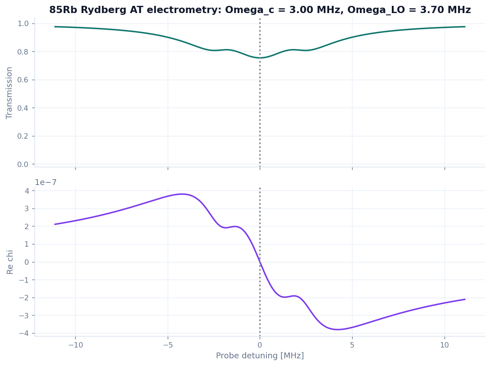
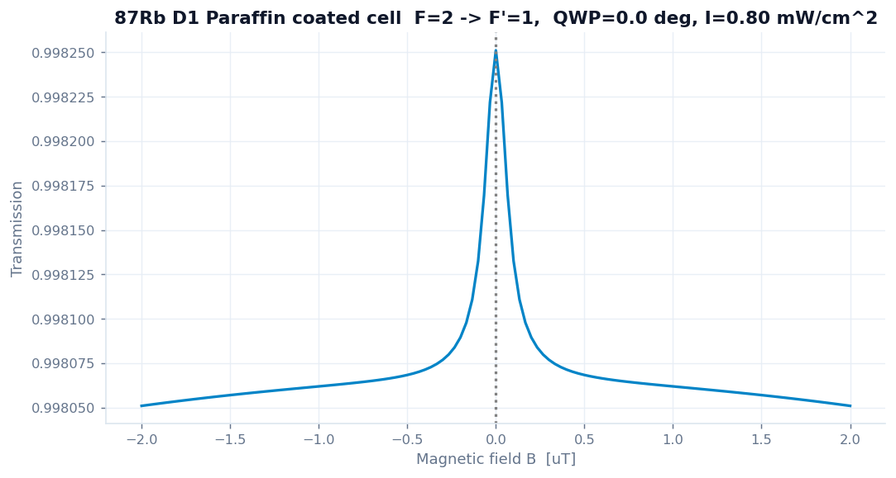
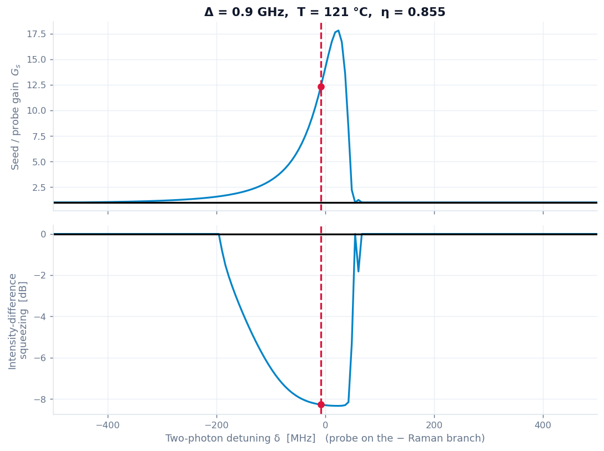

GABES란 무엇인가
정상상태 OBE를 푸는 toy model. 단, 꽤 깊은 수준의 toy.
원자-광 상호작용을 정량적으로 보려면 결국 밀도행렬 ρ의 운동방정식을 풀어야 한다. GABES가 푸는 것도 바로 그것이다 — 회전틀에서의 리우빌 방정식의 정상상태다.
여기서 𝓛는 자발방출·바닥상태 결잃음을 담은 린드블라드 소산자다. GABES는 이 식을
레벨 구조(AtomModel)와 실험 구성(Scheme)으로부터 자동으로 조립하고,
속도 클래스마다 정상상태 ρ를 구한 뒤 결맞음
ρeg에서 감수율 χ를 읽고,
거기서 흡수·분산·이득·편광회전을 만든다. 시간영역 적분(NDSolve류)이 아니라
정상상태 선형 풀이라는 점이 핵심이다.
"toy"가 뜻하는 것 — 그리고 뜻하지 않는 것
이 도구가 의도적으로 단순화한 부분은 분명히 있다. 정직하게 적어 둔다.
- 정상상태만 본다. STIRAP·Ramsey 같은 시간영역 동역학, Mollow 삼중선· g(2)(τ) 같은 2-시간 상관은 현재 엔진 밖이다.
- 축약된 레벨 구조를 쓴다. 각 스킴은 그 물리에 필요한 최소 다양체(2-준위, Λ, 캐스케이드, 또는 한 쌍의 Fg↔Fe 제이만 다양체)만 세운다.
- 전파는 선형 또는 보정된 추정이다. FWM 짝광자 발생률처럼 일부 출력은 완전한 양자-Langevin 전파가 아니라 문헌에 맞춰 보정한 추정치다(해당 패널에 명시).
단순화한 곳은 있지만, GABES가 빠른 이유는 물리를 빼서가 아니다. 실제 hyperfine Clebsch–Gordan 세기, Doppler 앙상블, Zeeman 다양체, 자발방출의 결맞음 전이(TOC), 실측 보정 밀도·선폭은 모두 살아 있다. 가속은 전적으로 방정식의 구조를 이용한 풀이 방식에서 온다. 다음 절이 그 이야기다.
그래서 무엇이 "깊은가"
- ⁸⁵Rb D1 흡수 절대 스케일을 실험실 AutoOD 계산기와 0.1 % 이내로 재현한다 (CRC 증기압 밀도 + CG·|d|² 정규화).
- 알칼리 SAS의 진짜 주인공인 hyperfine optical pumping(다른 바닥상태로의 CG 분기 붕괴)을 담아, crossover가 단순 dip이 아니라 증강·반전 피크로 나타난다.
- 자발방출의 결맞음 전이를 편광별 Σq 점프 연산자로 넣어, Hanle 영역의 고유 EIA와 buffer-gas LCA 같은 미묘한 부호 전환까지 재현한다.
- FWM은 ⁸⁵Rb D1 double-Λ에서 Sim et al.의 동작점(이득 ≈ 15, IDS −7.8 dB)을 잡는다.
왜 빠른가
OBE 앙상블 풀이가 느리다는 건 다들 안다. GABES는 그 느림의 원인을 구조적으로 제거한다.
Doppler 평균이 들어간 OBE는 보통 느리다. 검출(detuning) 한 점마다, 속도 클래스 하나하나마다, 작은 선형계(또는 비선형 OBE)를 따로 풀고 그것을 속도에 대해 수치적분하기 때문이다. 스캔점 × 속도 샘플만큼의 독립 풀이가 쌓이고, 온도나 셀을 바꾸면 처음부터 다시 푼다. GABES는 같은 답을 내면서 이 비용 구조를 네 군데에서 무너뜨린다.
① 속도는 대각 이동으로만 들어온다 — Δeff 트릭
공진하는 기하에서 속도 v는 리우빌리안에 들뜬상태 대각의 이동으로만 들어온다. 즉 모든 속도가 하나의 템플릿을 공유하고, 차이는 스칼라 한 개뿐이다.
그래서 속도 앙상블 전체와 detuning 스캔 전체가 구조가 같은 작은 선형계의 거대한 더미로
바뀐다. GABES는 이 더미를 파이썬 루프로 하나씩 풀지 않고, 한 축으로 쌓아
한 번의 벡터화된 LAPACK 호출(np.linalg.solve)로 동시에 푼다.
"각 점마다 따로 풀던" 것을 "전부 묶어 한 번에" 푸는 셈이다.
② χ̄ 표는 온도·Δ에 무관하다 — 재계산이 아니라 보간
한 번 만든 χ̄(δ, Δeff) 표는 온도와 전체 detuning에 독립이다. 온도는 Maxwell 가중치로만, 스캔은 축의 평행이동으로만 들어가기 때문이다. 결과적으로 Doppler 평균은 OBE를 다시 푸는 일이 아니라, 미리 푼 표를 따라가는 가중 보간이 된다. 온도 슬라이더를 흔들어도, 셀 길이를 바꿔도, 무거운 풀이는 다시 돌지 않는다.
③·④ 작은 행렬에 맞춘 두 가지 미시 최적화
- 단일 스레드 BLAS. 한 번에 푸는 행렬이 아주 작다(M = n2 ≤ 64). 이 크기에선 LAPACK 멀티스레딩의 호출 오버헤드가 병렬 이득을 잡아먹는다. 무거운 풀이 구간만 스레드를 1로 묶어 전 작업에서 25–30 % 더 빠르다.
- 2×2 닫힌형 행렬지수. 빔 전파의 전달행렬은 고유분해 없이 cosh/sinh 닫힌형으로 배치 계산한다.
solve. recompute 노브가 바뀔 때만 실행.정직한 벤치마크
아래는 완전히 동일한 선형계 묶음(Λ 정상상태, 9×9, 2만 개)을 두 방식으로 푼 결과다. 한쪽은 점마다 따로(옛 방식), 다른 쪽은 GABES의 배치 풀이. 결과는 비트 단위로 같다 (최대 오차 0). 물리를 바꾼 게 아니라 푸는 순서만 바꿨다는 뜻이다.
이 4.7×는 오직 배치화만으로 얻은, 가장 보수적인 숫자다(작은 9×9에서). 더 큰 다양체일수록, 그리고 ②의 표 재사용이 더해질수록 실제 이득은 훨씬 커진다 — 온도·셀· detuning을 바꾸는 대부분의 상호작용에서 무거운 풀이가 아예 다시 돌지 않기 때문이다. 체감으로는, 한 스킴의 전체 재계산이 다음 수준이다.
| 스킴 | 한 번의 전체 재계산 | 내용 |
|---|---|---|
| Λ 결맞음 (EIT/AT/CPT) | ~0.6 s | Doppler-on Λ 스캔 |
| Absorption (OD/SAS) | ~0.4 s | 다중선 hyperfine + 펌프 SAS |
| Magneto (Hanle/NMOR) | ~0.35 s | B-스캔 × 속도, 2-영역 풀이 |
| FWM 집중 창 | ~수 초 | 3-모드 Floquet + Maxwell–Bloch 전파 |
노브는 두 종류다. recompute 노브(온도·세기·전이 등)만 무거운 풀이를 다시 돌리고, navigate 노브(예: FWM의 2광자 detuning, 셀 길이)는 이미 캐시된 곡선 위를 옮겨 다닐 뿐이라 즉각 갱신된다. 헤더의 "N solve knobs" 배지가 그 스킴에서 무거운 노브가 몇 개인지 알려 준다.
측정은 일반 노트북 CPU 기준의 한 예시이며 하드웨어에 따라 달라진다. 요점은 절대 시간이 아니라 비용 구조다 — 중첩 속도적분이 사라지고, 대부분의 노브 조작에서 재풀이가 일어나지 않는다.
무엇을 할 수 있나
사이드바에서 스킴 하나를 고르면, 그 물리에 맞는 컨트롤과 플롯이 따라온다. 눌러 보면 된다.
GABES는 단일 화면에 모든 슬라이더를 늘어놓지 않는다. 각 스킴이 자기 컨트롤과 플롯을 스스로 선언하고, UI는 선택된 스킴의 것만 그린다. 현재 다섯 개의 스킴(엔진 클러스터)이 있다.
흡수 분광 (OD / SAS)
역행 펌프가 있는 약한 프로브 흡수. 펌프 0 → OD(Doppler 다중선 흡수), 펌프 켬 → SAS(Doppler-free Lamb dip + crossover). ⁸⁵Rb/⁸⁷Rb/¹³³Cs · D1/D2 또는 천연 Rb.


펌프 세기 슬라이더 하나로 OD ↔ SAS 사이를 연속으로 오간다. 프로브는 약하게 고정(읽기용), 펌프 세기[mW]만 노브다 (I = 2P/πw2, Isat로 Rabi 환산).
Λ 결맞음 (EIT / AT / CPT)
하나의 3-준위 Λ 엔진, 결합장 Ωc의 세 영역. 약한 결합 → EIT 투명창, 강한 결합 → Autler–Townes 이중선(간격 ≈ Ωc), 좁은 2광자 스캔 → CPT 암흑공명. Rb/Cs D-line, 물리 단위(MHz/kHz) 컨트롤.

Rydberg-EIT 전기계측
⁸⁵Rb 캐스케이드 EIT / 마이크로파 AT 정적 스펙트럼. 5S–5P–40D 사다리와 37 GHz 40D–39F RF 다리. EIT 피크가 RF장에 의해 갈라지는 AT 분리가 전기장의 자 역할을 한다.

Hanle / EIA / NMOR
⁸⁷Rb D1 제이만 다양체의 영자기장 근처 응답. Hanle 효과(바닥상태 결맞음에서 오는 영자기장 투과 dip/peak, EIA 변형 포함)와 비선형 자기광학 회전(NMOR, 편광면 회전)을 한 엔진으로. 프로브 타원율(QWP), 잔류 횡장, 셀 완화가 부호를 결정한다.

4파 혼합 (FWM) · 짝광자
⁸⁵Rb D1 double-Λ의 씨앗형 이득/스퀴징(Sim et al. 동작점)과, 범용 SFWM 짝광자원 추정(g(2)SI(τ), CAR, 발생률, 위상정합).

느린 빛/군지수 읽기, Raman 이득, 고차 파혼합, Bell–Bloom 자력계, Na D-line 등은 검토 중이다. 시간영역(STIRAP·Ramsey)과 2-시간 상관(Mollow·g(2)(τ))은 새 엔진 계층이 필요하다.
화면 사용법
실행은 한 줄. 나머지는 사이드바에서 누르며 익히면 된다.
실행
# 의존성: streamlit, numpy, matplotlib
streamlit run streamlit_app.py
python streamlit_app.py로는 동작하지 않는다(서버가 뜨지 않음).
반드시 streamlit run으로 실행한다. FWM의 CLI 백엔드만 필요하면
python fwm_obe.py.
한눈에 보는 흐름
- 스킴 선택. 사이드바 맨 위 드롭다운에서 실험/물리를 고른다. 화면의 컨트롤과 플롯이 통째로 그 스킴 것으로 바뀐다.
- Default 불러오기. 스킴마다 검증된 동작점이 준비돼 있다(예: Absorption의 OD default / SAS default, Λ의 EIT/AT/CPT, Magneto의 EIT dip·EIA peak·NMOR…). 먼저 이걸 불러 두고 한 노브씩 흔들어 보는 걸 권한다.
- 그룹별 노브 조절. 컨트롤은 Atomic · Fields · Detunings · Cell & beams 등으로 묶여 있다. 정밀·수치 노브는 Advanced / numerics 펼침 안에 접혀 있다.
- 읽기. 상단의 metric 카드가 핵심 수치(투과·OD·이득·FWHM·회전 등)를, 그 아래 플롯이 스펙트럼을, 펼침 패널이 파생량 표와 Reference / about(참고문헌)을 보여 준다.
슬라이더를 움직였을 때 즉시 반응하면 navigate 노브(캐시된 곡선 위 이동), 잠깐 "Solving Bloch equations…"가 뜨면 recompute 노브다. 탐색은 navigate 노브로 넓게, 정밀 조정은 recompute 노브로 좁게 — 이게 가장 쾌적하다.
한계와 로드맵
아직 베타다. 무엇이 근사이고 무엇이 검증됐는지는 숨기지 않는다.
- 정상상태 전용. 시간영역·2-시간 상관은 미지원(로드맵).
- FWM 절대 발생률은 보정된 추정. 위상 부정합, 손실/노이즈, 펌프 고갈, 전체 Zeeman 구조는 아직 단순화돼 있다. FWM 이득은 고밀도에서 지수적으로 민감하므로, 잔여 결합 스케일은 보정 영역(~0.05) 근처에서 쓰는 걸 권한다.
- 흡수는 짧은 셀. Rb는 강한 흡수체라 공진에서 cm급 셀이면 OD가 포화한다. OD/EIT/AT/CPT 기본값이 mm급 셀·중간 온도를 쓰는 이유다.
- buffer-gas는 압력 넓힘만. 압력 이동과 Dicke 좁힘은 미포함.
- 일부 스케일 노브는 보정용이다(line-strength factor 등). 물리 변수가 아니라 유효 광학깊이 보정 손잡이이므로, 기본값 1.0이 검증 스케일을 재현한다.
요약하면, GABES는 직관과 빠른 탐색을 위한 도구다. 발표용 정밀값이 필요하면 해당 패널의 근사 범위를 확인하고 쓰는 게 좋다. 기능은 계속 추가될 예정이다.
출처와 검증
각 스킴의 Reference / about 패널에 1차 문헌이 함께 들어 있다.
- 흡수 절대 스케일: 실험실 AutoOD 계산기와 ⁸⁵Rb D1에서 0.1 % 이내 일치. 밀도는 CRC 증기압, 선세기는 Wigner-6j/3j (Steck D-line data).
- SAS hyperfine pumping: Smith & Hughes, Am. J. Phys. 72, 631 (2004); Preston, Am. J. Phys. 64, 1432 (1996).
- Magneto: Lee & Moon, JOSA B 30, 2301 (2013); Moon & Kim, Opt. Express 22, 18604 (2014); Yu, Lee & Moon, Phys. Rev. A 81, 023416 (2010).
- FWM 스퀴징: G. Sim, H. Kim, H. S. Moon, Sci. Rep. 15, 7727 (2025) (⁸⁵Rb 최적점: Δ 0.9 GHz, δ −8 MHz, 121 °C → 이득 ≈ 15, IDS −7.8 dB).
회귀·물리 검증 테스트는 tests/에 있다(pytest tests/). 절대 스케일·선폭·
AT 분리·NMOR 영점 교차 등을 자동으로 확인한다.